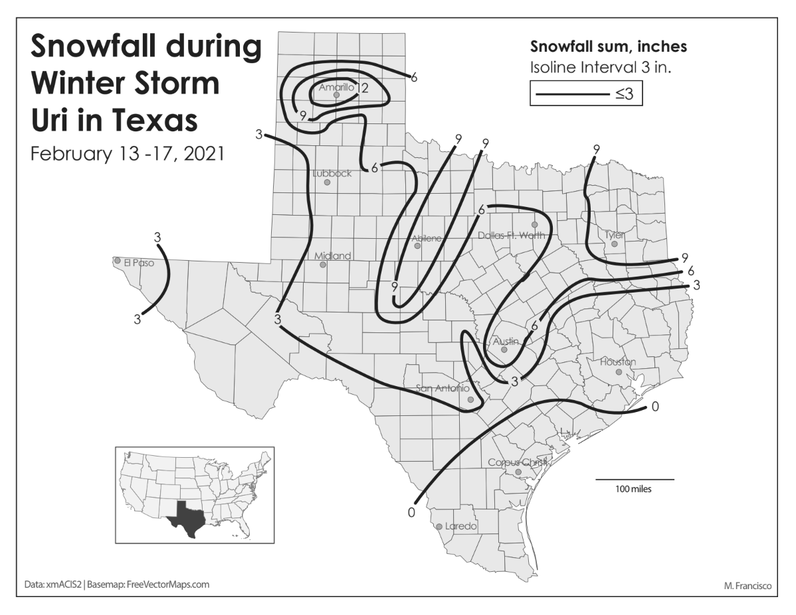
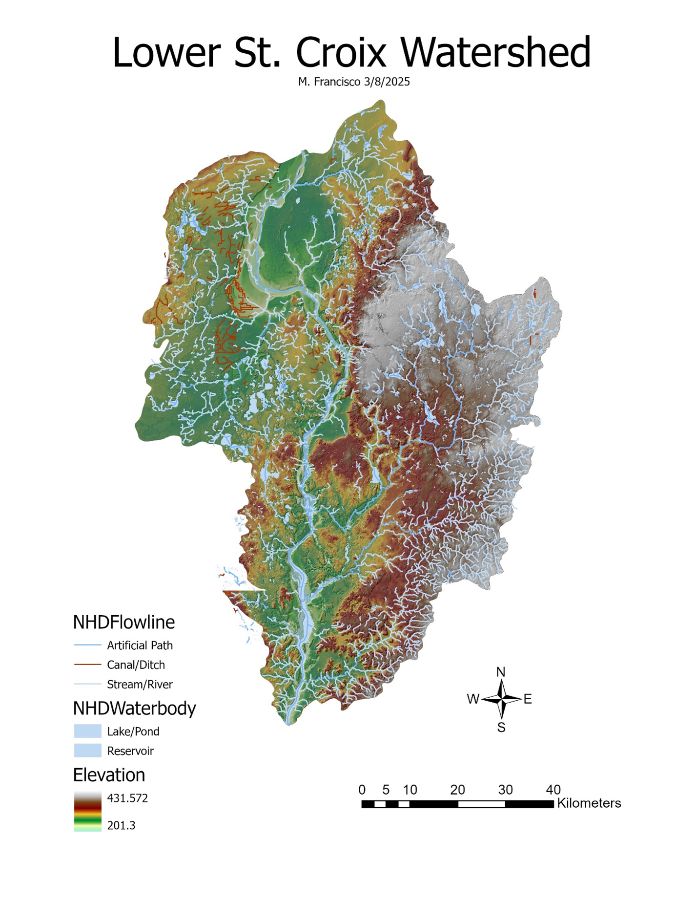
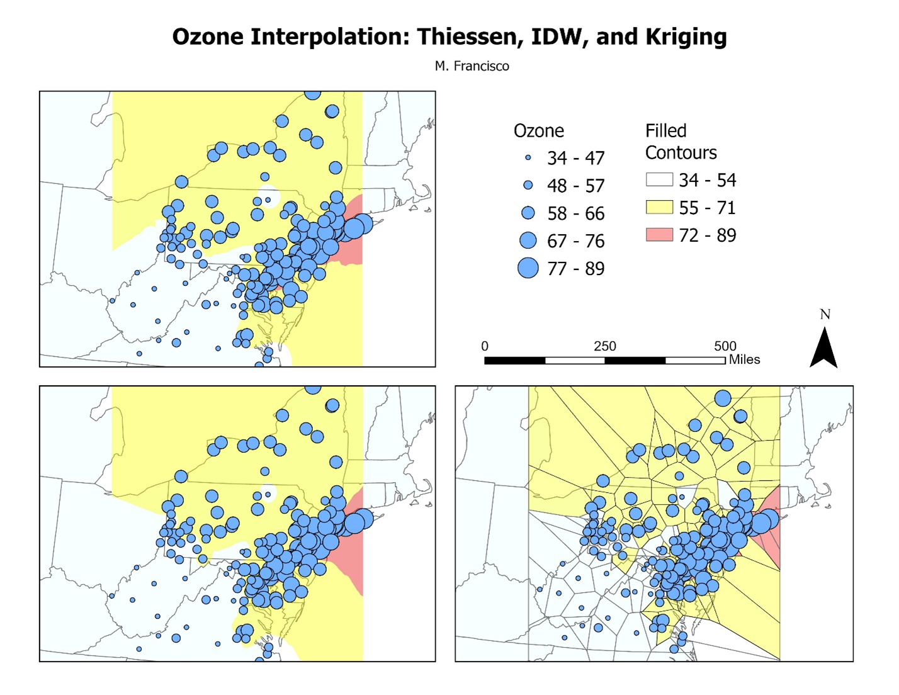
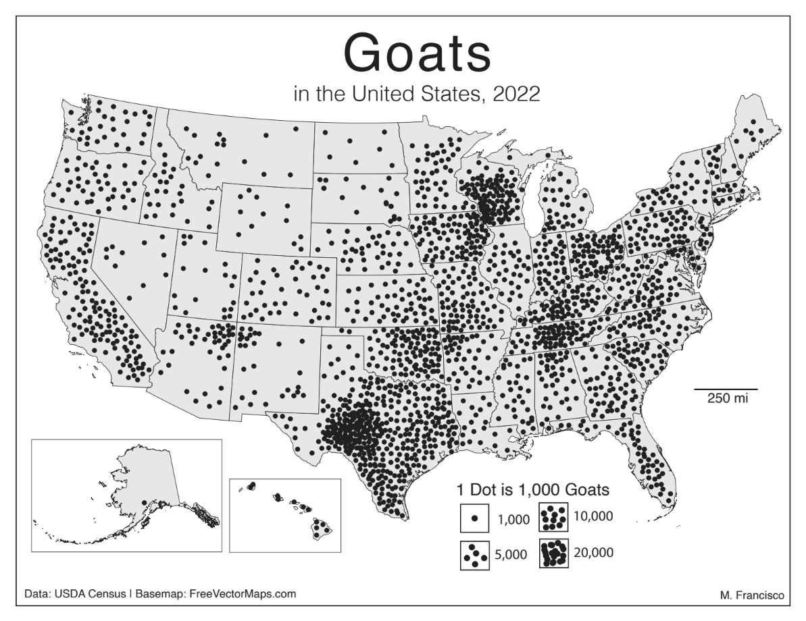

 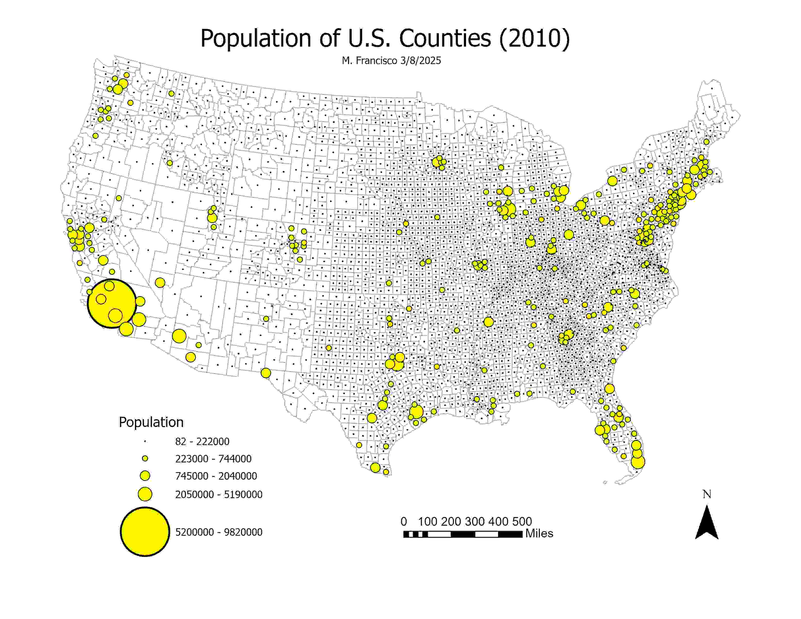
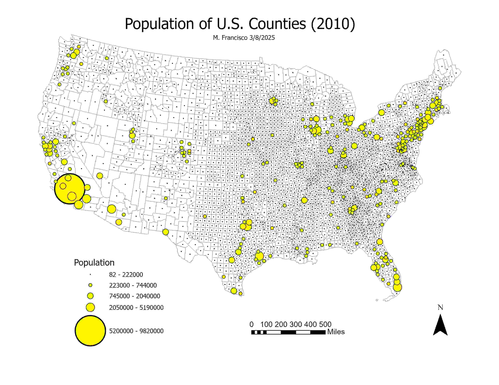
 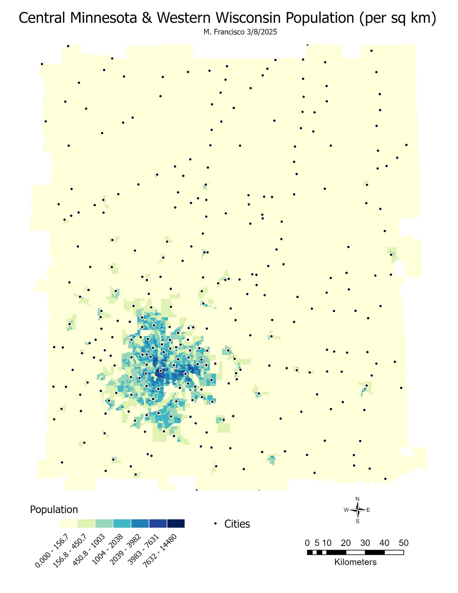
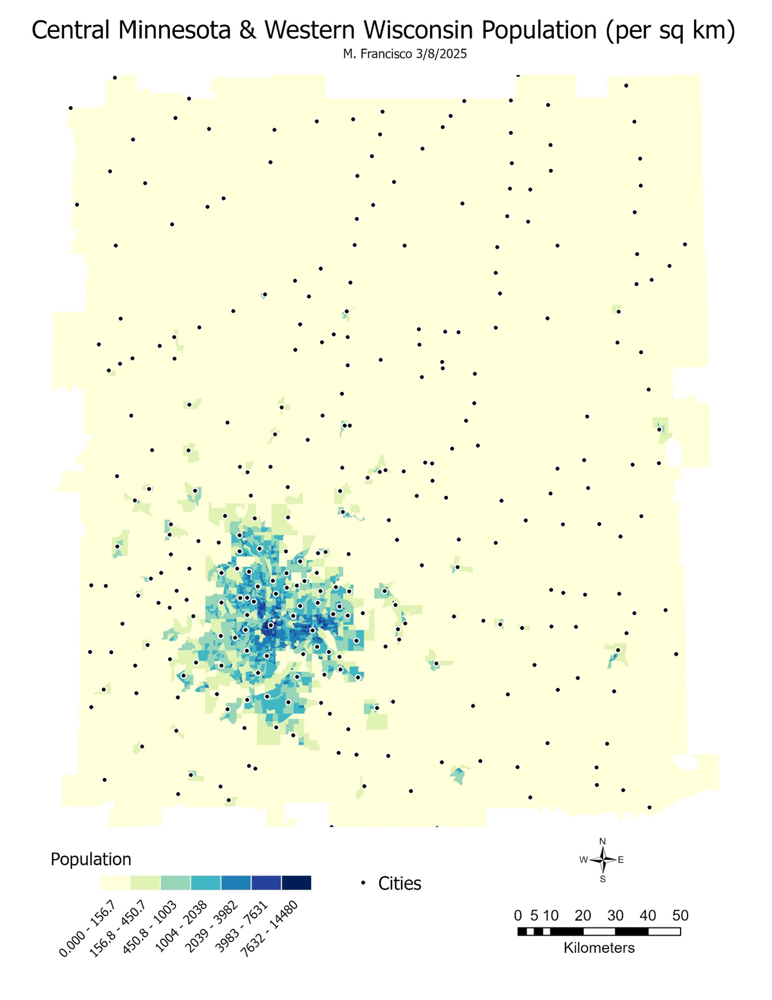
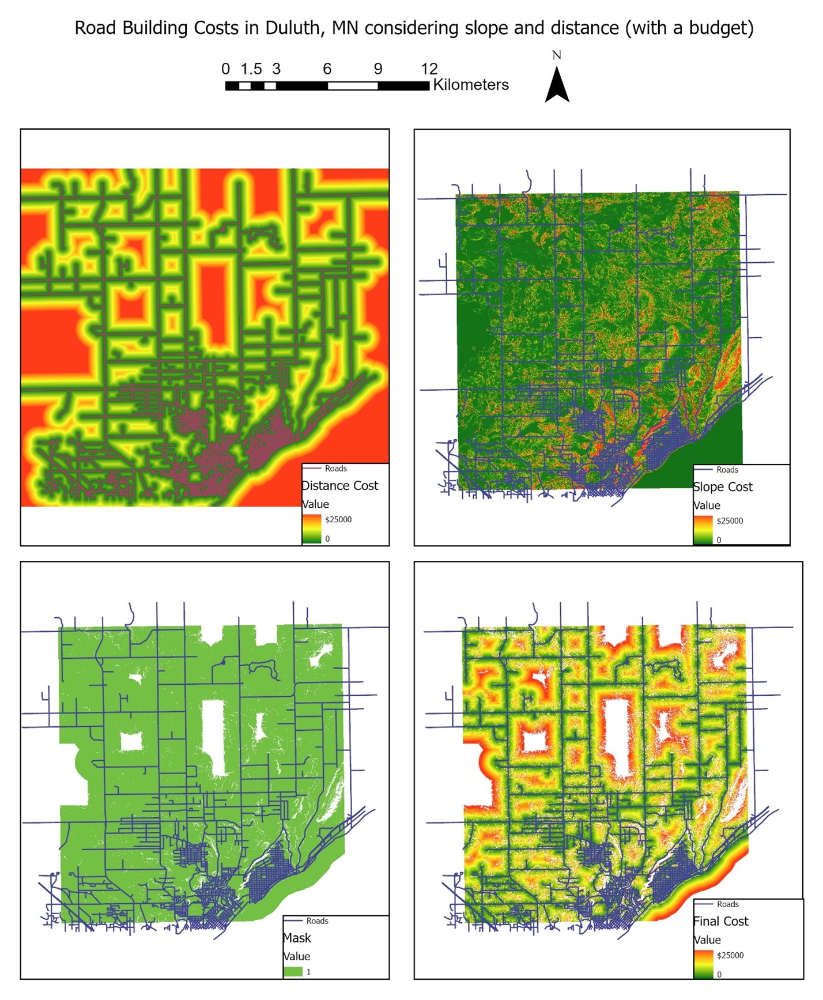
These were created as a part of a Cartographic Design and Environmental GIS courses, and mostly focus on cartographic principles, data curation and normalization, and different methods of data visualization.
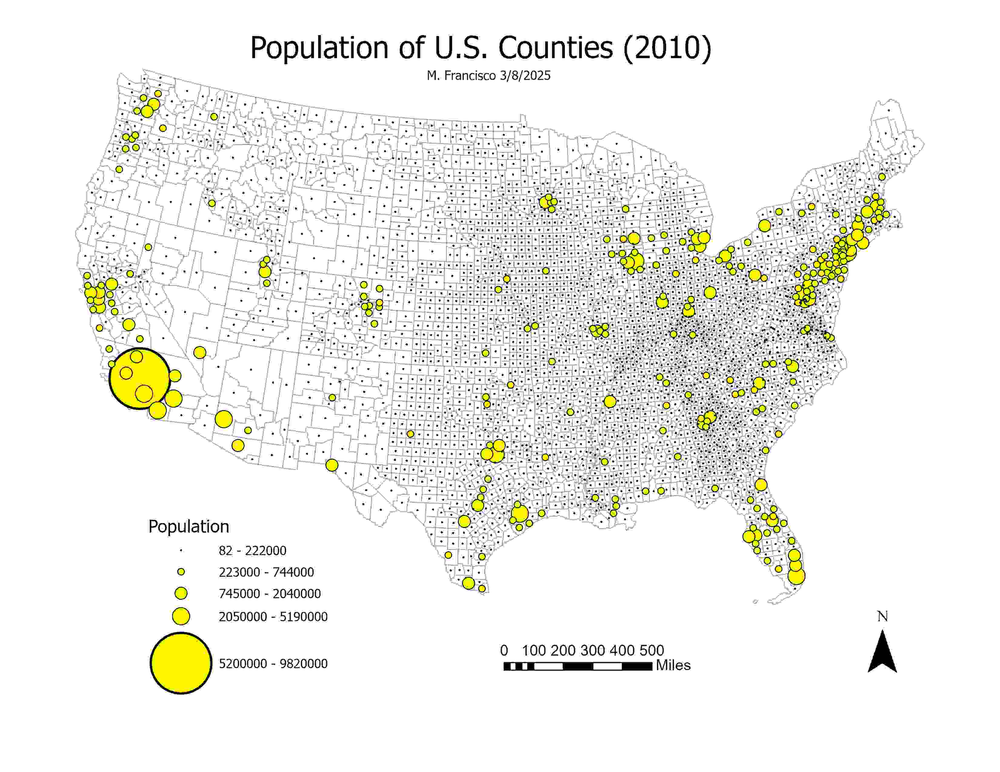
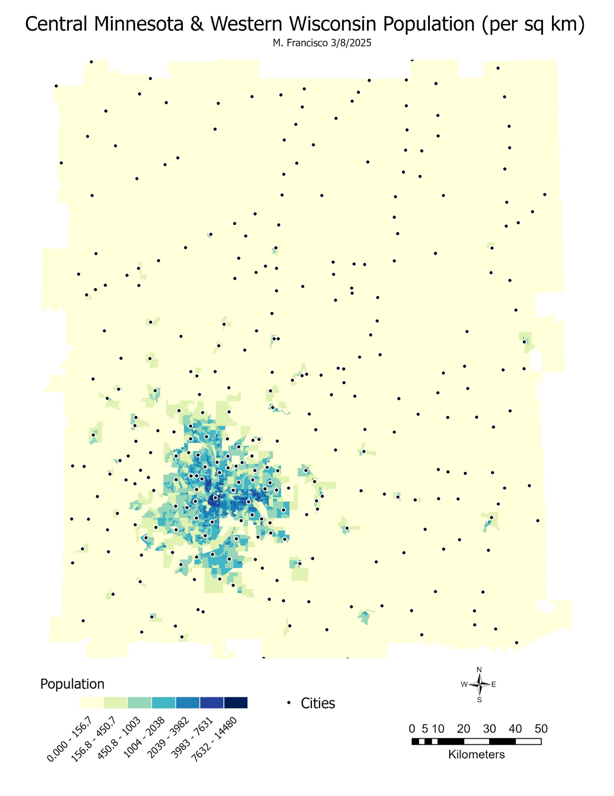